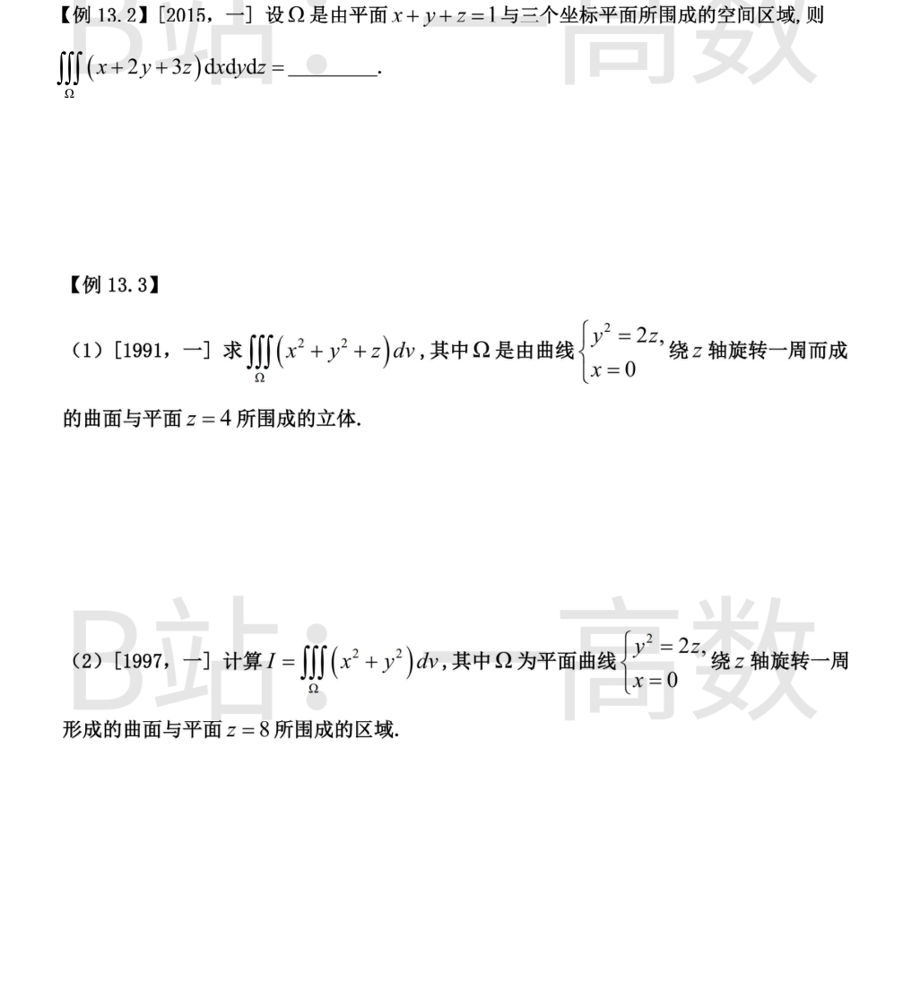
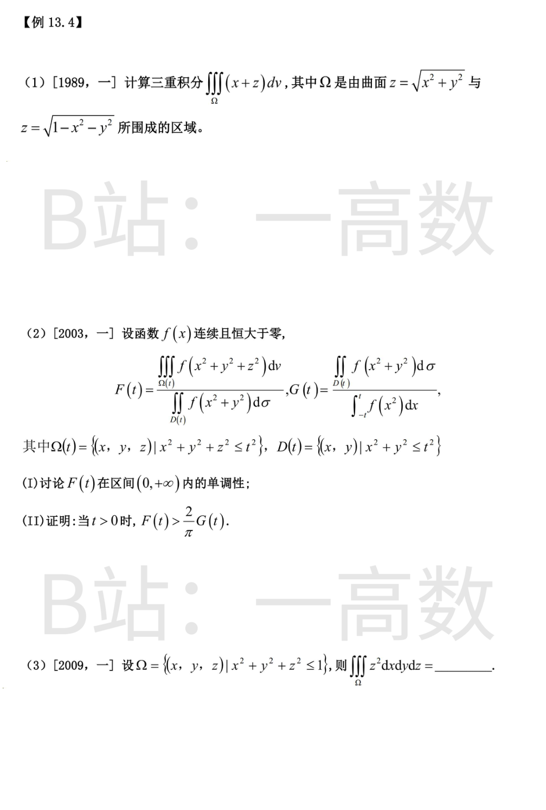
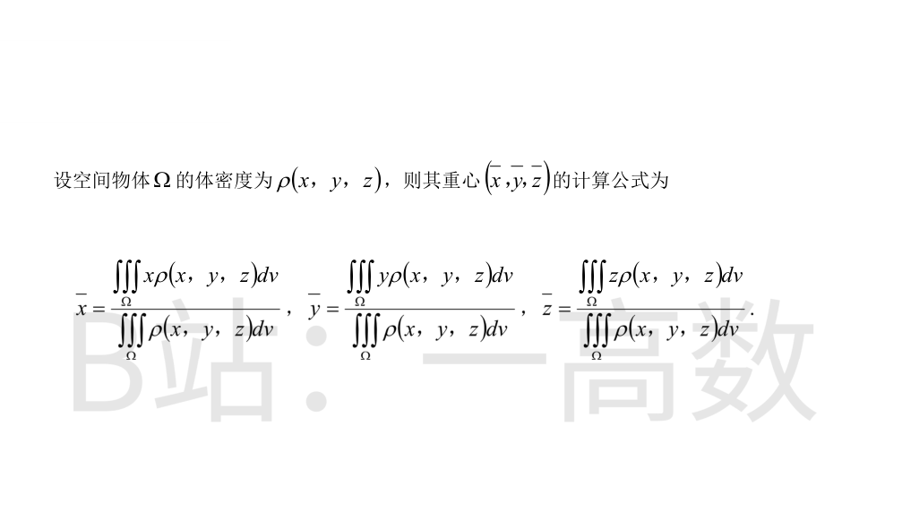
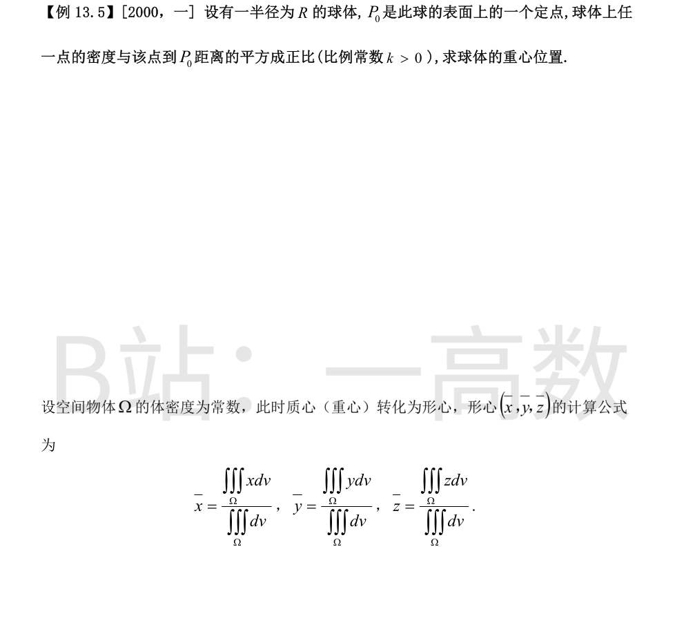
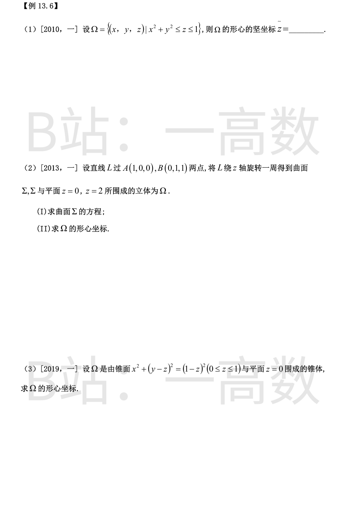

Ω 关于轮换对称：∭x dV=∭y dV=∭z dV，故原积分=6∭_Ω z dV。
截面法（垂直 z 轴）：z∈[0,1]，截面为直角边长 1-z 的直角三角形，面积 (1-z)²/2。
$$\iiint_\Omega z\,\mathrm{d}V=\int_0^1 z\cdot\frac{(1-z)^2}{2}\,\mathrm{d}z=\frac12\left(\frac12-\frac23+\frac14\right)=\frac12\cdot\frac{1}{12}=\frac{1}{24}.$$
原积分=6×1/24=1/4。
旋转曲面：x²+y²=2z（旋转抛物面），Ω: (x²+y²)/2≤z≤4。
柱坐标（先二后一也可）：截面半径 √(2z)。
$$\iiint=\int_0^{2\pi}\mathrm{d}\theta\int_0^4 \mathrm{d}z\int_0^{\sqrt{2z}}(r^2+z)r\,\mathrm{d}r=2\pi\int_0^4\left[\frac{r^4}{4}+\frac{zr^2}{2}\right]_0^{\sqrt{2z}}\mathrm{d}z.$$
内层：r⁴/4=(2z)²/4=z²，zr²/2=z·2z/2=z²，合计 2z²。
$$=2\pi\int_0^4 2z^2\,\mathrm{d}z=4\pi\cdot\frac{64}{3}=\frac{256\pi}{3}.$$
Ω: (x²+y²)/2≤z≤8。柱坐标，截面半径 √(2z)：
$$I=\int_0^{2\pi}\mathrm{d}\theta\int_0^8 \mathrm{d}z\int_0^{\sqrt{2z}} r^3\,\mathrm{d}r=2\pi\int_0^8\frac{(2z)^2}{4}\,\mathrm{d}z=2\pi\int_0^8 z^2\,\mathrm{d}z=2\pi\cdot\frac{512}{3}=\frac{1024\pi}{3}.$$
Ω 为锥面之上、上半球面之内的区域（冰激凌锥）。Ω 关于 yOz、zOx 面对称且 x 为奇函数 ⟹ ∭x dV=0。
球坐标：锥面 z=√(x²+y²) 即 φ=π/4，球面 r=1：0≤r≤1, 0≤φ≤π/4, 0≤θ≤2π，z=rcosφ。
$$\iiint_\Omega z\,\mathrm{d}V=\int_0^{2\pi}\mathrm{d}\theta\int_0^{\pi/4}\sin\varphi\cos\varphi\,\mathrm{d}\varphi\int_0^1 r^3\,\mathrm{d}r=2\pi\cdot\frac{\sin^2(\pi/4)}{2}\cdot\frac14=2\pi\cdot\frac14\cdot\frac14=\frac{\pi}{8}.$$
故原积分=π/8。
(I) 球坐标与极坐标化简分子分母：
$$F(t)=\frac{4\pi\int_0^t f(r^2)r^2\mathrm{d}r}{2\pi\int_0^t f(r^2)r\,\mathrm{d}r}=\frac{2A(t)}{B(t)},\quad A=\int_0^t f(r^2)r^2\mathrm{d}r,\ B=\int_0^t f(r^2)r\,\mathrm{d}r.$$
$$F'(t)=2\cdot\frac{f(t^2)t^2B-A\cdot f(t^2)t}{B^2}=\frac{2tf(t^2)}{B^2}\left[tB-A\right].$$
而 tB-A=∫₀ᵗ (tr-r²)f(r²)dr=∫₀ᵗ r(t-r)f(r²)dr>0（t>0 时被积函数在 (0,t) 内恒正）。
故 F'(t)>0，F(t) 在 (0,+∞) 单调增加。
(II) ∫_{-t}^t f(x²)dx=2∫₀ᵗ f(x²)dx，于是
$$\frac{2}{\pi}G(t)=\frac{2}{\pi}\cdot\frac{2\pi B}{2C}=\frac{2B}{C},\quad C=\int_0^t f(x^2)\mathrm{d}x.$$
需证 F=2A/B > 2B/C，即 AC>B²。由柯西—施瓦茨不等式：
$$B^2=\left(\int_0^t \sqrt{f(r^2)}\cdot r\cdot\sqrt{f(r^2)}\,\mathrm{d}r\right)^2\le\int_0^t f(r^2)r^2\mathrm{d}r\cdot\int_0^t f(r^2)\mathrm{d}r=A\cdot C.$$
由于两函数 √(f(r²))·r 与 √(f(r²)) 之比 r 在 (0,t) 上非常数且 f>0，不等号严格，故 AC>B²，即 F(t)>(2/π)G(t)。证毕。
截面法：z∈[-1,1]，截面为半径 √(1-z²) 的圆盘。
$$\iiint_\Omega z^2\,\mathrm{d}V=\int_{-1}^1 z^2\cdot\pi(1-z^2)\,\mathrm{d}z=\pi\left(\frac{2}{3}-\frac{2}{5}\right)=\frac{4\pi}{15}.$$
（球坐标核对：z=rcosφ，∫₀^{2π}dθ·∫₀^π sinφcos²φdφ·∫₀¹r⁴dr=2π·(2/3)·(1/5)=4π/15，一致。）

以球心为原点，P₀=(0,0,R)：ρ=k[x²+y²+(z-R)²]=k(r²-2Rrcosφ+R²)。
密度关于平面 x=0、y=0 对称 ⟹ x̄=ȳ=0。
质量：cosφ 项积分为 ∫₀^π sinφcosφdφ=0，
$$M=2\pi k\int_0^R\left(2r^4+2R^2r^2\right)\mathrm{d}r=2\pi k\left(\frac{2R^5}{5}+\frac{2R^5}{3}\right)=\frac{32\pi kR^5}{15}.$$
$$M_z=\iiint z\rho\,\mathrm{d}V=2\pi k\int_0^R\left[r^3\!\!\int_0^\pi\!\sin\varphi\cos\varphi\,\mathrm{d}\varphi-2Rr^2\!\!\int_0^\pi\!\sin\varphi\cos^2\varphi\,\mathrm{d}\varphi+R^2r\!\!\int_0^\pi\!\cos\varphi\sin\varphi\,\mathrm{d}\varphi\right]\mathrm{d}r,$$
其中 ∫₀^π sinφcosφdφ=0，∫₀^π sinφcos²φdφ=2/3，故
$$M_z=2\pi k\left(-2R\cdot\frac23\cdot\frac{R^3}{3}\right)=-\frac{8\pi kR^4}{9}.$$
$$\bar z=\frac{M_z}{M}=-\frac{8\pi kR^4/9}{32\pi kR^5/15}=-\frac{5R}{12}.$$
即重心在 P₀ 与球心连线上、球心背离 P₀ 一侧、距球心 5R/12 处（密度在远离 P₀ 处大，结果方向合理）。
【仲裁修正】独立校验发现分歧，经仲裁重解，以本答案为准：由\rho=k(r^2-2Rz+R^2)得M_z=-2Rk\iiint z^2dV=-\frac{8\pi kR^6}{15}，M=\frac{32\pi kR^5}{15}，故\bar{z}=-R/4；solver球坐标积分中r的幂次出错才得5R/12

V=∫₀¹ πz dz=π/2；∭z dV=∫₀¹ z·πz dz=π/3。
z̄=(π/3)/(π/2)=2/3。
(I) L 的参数式：(x,y,z)=(1-t, t, t)，故 z=t。旋转面上点到 z 轴距离不变：
x²+y²=(1-t)²+t²=(1-z)²+z²=2z²-2z+1。
Σ: x²+y²-2z²+2z-1=0（0≤z≤2）。
(II) 由旋转对称 x̄=ȳ=0。截面半径²=r²(z)=2z²-2z+1：
$$V=\pi\int_0^2(2z^2-2z+1)\,\mathrm{d}z=\pi\left(\frac{16}{3}-4+2\right)=\frac{10\pi}{3}.$$
$$\iiint_\Omega z\,\mathrm{d}V=\pi\int_0^2 z(2z^2-2z+1)\,\mathrm{d}z=\pi\left(8-\frac{16}{3}+2\right)=\frac{14\pi}{3}.$$
z̄=(14π/3)/(10π/3)=7/5。形心 (0,0,7/5)。
高度 z 处截面：x²+(y-z)²≤(1-z)²，即圆心 (0,z)、半径 (1-z) 的圆盘，0≤z≤1。
$$V=\pi\int_0^1(1-z)^2\,\mathrm{d}z=\frac{\pi}{3}.$$
关于 x=0 面对称 ⟹ x̄=0。
圆盘形心在圆心 (0,z)，故
$$\iiint y\,\mathrm{d}V=\int_0^1 z\cdot\pi(1-z)^2\mathrm{d}z=\frac{\pi}{12},\qquad \iiint z\,\mathrm{d}V=\int_0^1 z\cdot\pi(1-z)^2\mathrm{d}z=\frac{\pi}{12}.$$
（∫₀¹ z(1-z)²dz=1/12。）ȳ=π/12÷π/3=1/4，z̄=1/4。形心 (0, 1/4, 1/4)。